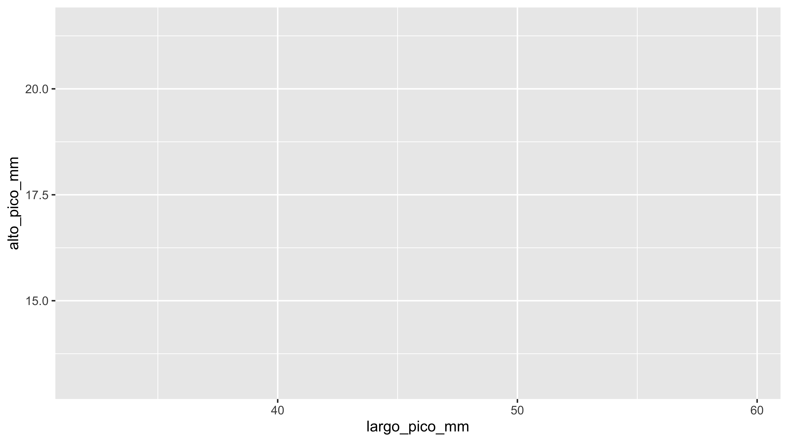
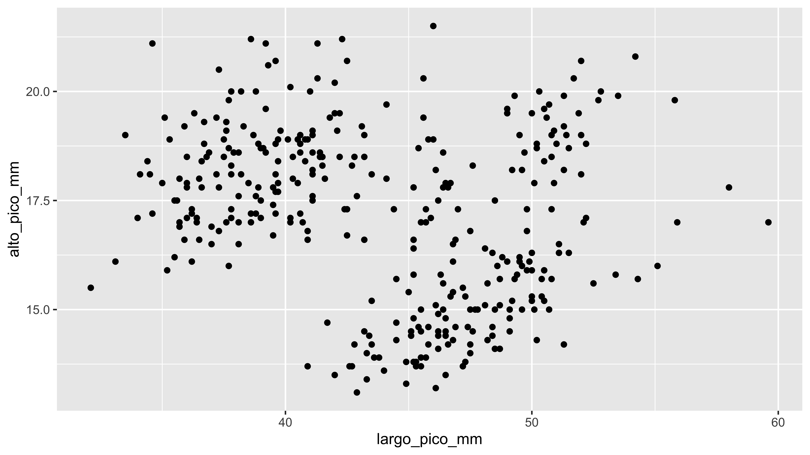
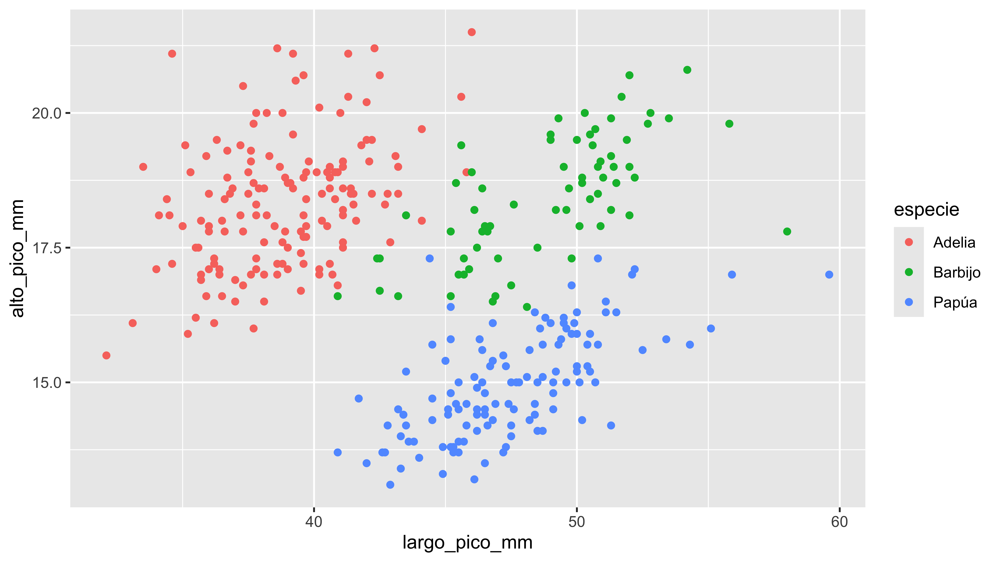
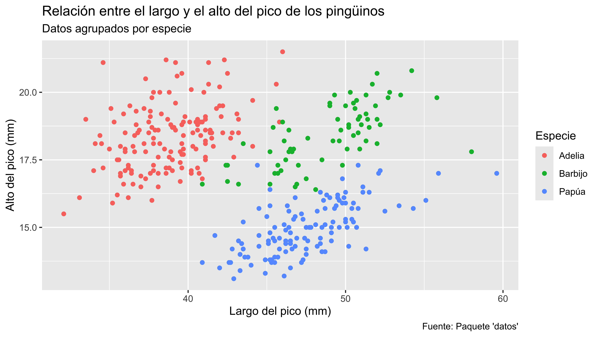
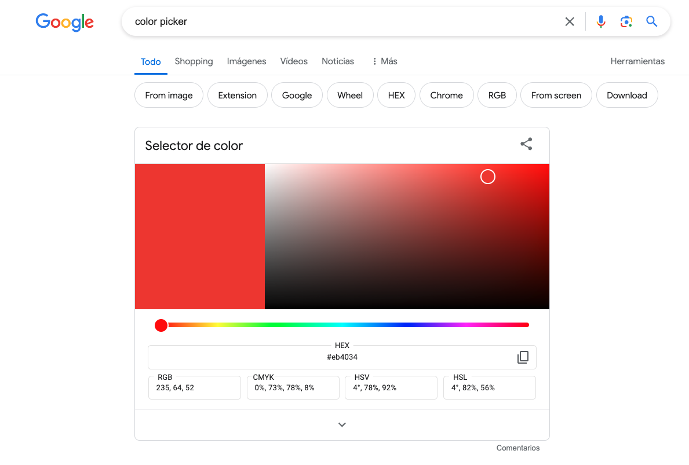
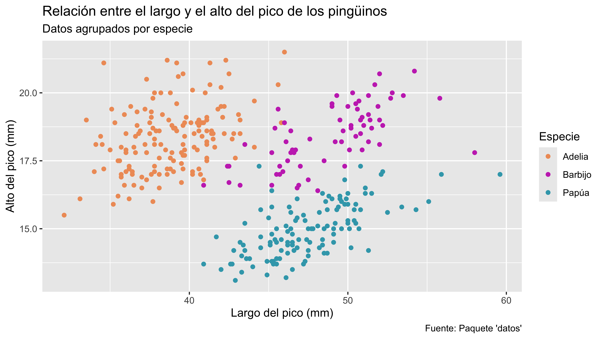
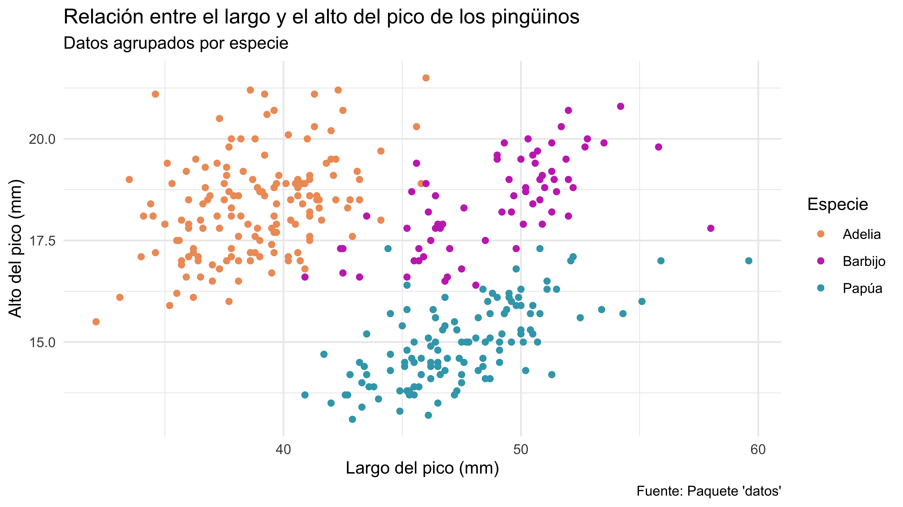

flowchart TB
A[Estructura de ggplot2] --> B[Datos]
A --> C[Mapeo Estético]
A --> D[Geometrías]
A --> E[Facetas]
A --> F[Escalas]
A --> G[Coordenadas]
A --> H[Temas]
A --> I[Etiquetas y Leyendas]
Visualización de datos con ggplot2
Explicada con calma 🧘🏽♀️🧘🏽
El paquete ggplot2 es quizá el más querido por la comunidad de usuarios de R. Aunque al inicio puede desesperarnos que nada funcione, esto casi siempre se resuelve cuando tomamos el tiempo de ver un poco de la teoría que hay detrás de ese paquete.
En este taller, nuestro objetivo es aclarar estos conceptos y ayudarte a crear gráficos funcionales y, ¿por qué no?, bonitos🎨.
Grámatica de los gráficos
Wilkinson (2005) creó la gramática de los gráficos para explicar las características básicas de todos los gráficos estadísticos. Esta gramática responde a la pregunta: ¿qué es un gráfico estadístico? ggplot2 Wickham (2010) se basa en esta gramática, destacando la importancia de las capas y adaptándola para usar en R. Básicamente, la gramática nos dice que un gráfico conecta los datos con atributos estéticos (color, forma, tamaño) de objetos geométricos (puntos, líneas, barras). El gráfico también puede incluir transformaciones estadísticas de los datos e información sobre el sistema de coordenadas del gráfico. Además, se puede usar el facetado para graficar diferentes subconjuntos de datos. La combinación de todos estos elementos es lo que crea un gráfico.

Imagina la estructura de ggplot2 como si fueran piezas de Lego que tenemos que ensamblar para construir algo. En este caso, la primera pieza, la base, sería nuestra capa de datos.
Para este ejemplo, utilizaremos la tabla pinguinos del paquete datos, una alternativa algo más bonita al clásico dataset “iris”.
pinguinos <- datos::pinguinos
glimpse(pinguinos)Rows: 344
Columns: 8
$ especie <fct> Adelia, Adelia, Adelia, Adelia, Adelia, Adelia, Adelia…
$ isla <fct> Torgersen, Torgersen, Torgersen, Torgersen, Torgersen,…
$ largo_pico_mm <dbl> 39.1, 39.5, 40.3, NA, 36.7, 39.3, 38.9, 39.2, 34.1, 42…
$ alto_pico_mm <dbl> 18.7, 17.4, 18.0, NA, 19.3, 20.6, 17.8, 19.6, 18.1, 20…
$ largo_aleta_mm <int> 181, 186, 195, NA, 193, 190, 181, 195, 193, 190, 186, …
$ masa_corporal_g <int> 3750, 3800, 3250, NA, 3450, 3650, 3625, 4675, 3475, 42…
$ sexo <fct> macho, hembra, hembra, NA, hembra, macho, hembra, mach…
$ anio <int> 2007, 2007, 2007, 2007, 2007, 2007, 2007, 2007, 2007, …
Este dataset contiene medidas del alto y largo del pico, peso, sexo y especie de pingüinos de la Antártida.

Capa de datos
Esta capa no muestra nada; veremos que aparece un rectángulo gris, pero su función es indicarle a ggplot dónde debe buscar los datos cuando mencionemos el nombre de alguna variable en el mapeo.
ggplot(
data = pinguinos
)Mapeo
Esta es quizá la parte más importante de nuestro gráfico. Wilke (2019) nos explica que el mapeo es un proceso de traducción en el que convertimos variables de nuestra tabla, casi siempre números y categorías, en atributos como la posición (x, y), el color, la forma o el tamaño de un elemento.

Para indicar el mapeo, utilizamos el parámetro mapping y le pasamos una aes (abreviatura de “aesthetic”, que en español se traduce como “estética”). Este término puede ser problemático porque podría sugerir que se refiere únicamente a la apariencia visual del gráfico. Sin embargo, en este contexto, “estética” se refiere a los atributos fundamentales que conforman un gráfico, como la posición (x, y), el color, la forma o el tamaño de los elementos.
En el ámbito del arte, la estética se ocupa de las propiedades que hacen que una obra de arte sea significativa y apreciable, más allá de su mera apariencia visual. Del mismo modo, en ggplot2, la estética se centra en cómo se representan los datos de manera que sean comprensibles y efectivos, no solo en cómo se ven.
Por ejemplo, en nuestro caso, la variable largo_pico_mm, que es una variable numérica en nuestra tabla, en nuestro gráfico se va a representar como la posición de los elementos en el eje x, y el alto_pico_mm pasará a representarse como la posición de los elementos en el eje y. Estamos traduciendo números de la tabla a ubicaciones, posiciones, en el espacio del gráfico. En esto consiste el mapeo.
ggplot(
data = pinguinos,
mapping = aes(
x = largo_pico_mm,
y = alto_pico_mm
)
)
Geometrías
Si nuestro gráfico fuera una construcción, digamos una casa, los datos y el mapeo serían los planos. Pero ahora toca ponerse manos a la obra para construir. Ese es el rol de las geometrías. Estas son las encargadas de dibujar los puntos, barras, líneas o cualquier otro elemento que veamos en el gráfico.

Las geometrías ya saben qué colores, posiciones y tamaños usar porque se los indicamos en el mapeo, ya vienen en los planos de la casa. Y así como hay albañiles, electricistas y plomeros, cada geom se especializa en construir un tipo de gráfico. Entre los más comunes están:
geom_point: gráfico de puntos (dispersión)geom_bar/geom_col: gráficos de barrasgeom_line: gráficos de líneasgeom_histogram: histogramas
En ggplot2.tidyverse.org, puedes encontrar una lista gigante de todas las geometrías que podemos utilizar, pero por ahora, con estos tenemos más que suficiente.
ggplot(
data = pinguinos,
mapping = aes(
x = largo_pico_mm,
y = alto_pico_mm
)
) +
geom_point()
Si alguna vez has hecho reparaciones en la casa, sabes que siempre al final alguien quiere algún cambio. Así que ahora yo quiero que mis puntos tengan colores, pero no cualquiera; quiero que el color dependa de la especie del pingüino. Como lo que queremos es que se tomen datos de la tabla para representarlos en el gráfico, debemos colocar esto en el mapping.
ggplot(
data = pinguinos,
mapping = aes(
x = largo_pico_mm,
y = alto_pico_mm,
color = especie
)
) +
geom_point()
Etiquetas
Las formas y los colores no son suficientes para dejar todo claro. Es por eso que todo gráfico que se precie de profesional debe llevar texto que lo acompañe: un título, subtítulo y una fuente.
Todos estos los vamos a colocar en una capa llamada labs().
ggplot(
data = pinguinos,
mapping = aes(
x = largo_pico_mm,
y = alto_pico_mm,
color = especie
)
) +
geom_point() +
labs(
title = "Relación entre el largo y el alto del pico de los pingüinos",
subtitle = "Datos agrupados por especie",
x = "Largo del pico (mm)",
y = "Alto del pico (mm)",
color = "Especie",
caption = "Fuente: Paquete 'datos'"
)
Aunque podemos encontrar en Estadística y Censos (INEC) (2017) una muy buena guía de cómo debemos redactar estos títulos y subtítulos para presentar gráficos estadísticos, para los términos del taller vamos a ser más “informales”. Sin embargo, vale mucho la pena revisarla.
Escalas
Al inicio te comentaba que todos aman a ggplot2. Esto se debe a que cosas que antes teníamos que hacer a mano con el paquete graphics, ahora las podemos hacer de forma casi mágica🪄. El paquete decide por nosotros aspectos como los colores a usar, las divisiones de los ejes y muchas otras cosas.
A medida que avanzamos, comenzamos a ponernos más exigentes con estos detalles y la primera duda que siempre surge es: “💬 Ok, pero esos colores no me gustan, ¿puedo poner otros?”
Cuando queremos modificar algo que ggplot2 ha seleccionado por nosotros, utilizamos las escalas.
Wickham, Navarro, y Pedersen (2024) explican de forma más rigurosa que las escalas controlan el mapeo de datos a atributos estéticos. Transforman tus datos en algo que puedes visualizar, como tamaño, color, posición o forma. Además, proporcionan las herramientas que te permiten interpretar el gráfico, como los ejes y las leyendas. Aunque es posible generar gráficos con ggplot2 sin comprender cómo funcionan las escalas, entenderlas y aprender a manipularlas te dará mucho más control sobre tus gráficos.
En este caso, para el color vamos a utilizar la escala scale_color_manual. A esta le indicaremos en el parámetro values los colores que queremos utilizar para nuestro gráfico.
Para especificar los colores, podemos hacerlo usando el nombre del color. La Universidad de Columbia nos hace el enorme favor de listar los colores por nombre, o podemos especificar el código hexadecimal del color. Suena raro, pero es fácil. En la computadora, los colores se guardan de manera diferente. Para evitar confusiones, cada posible color que genera la pantalla tiene un código único. Estos códigos se ven algo así.

La pregunta obvia es: ¿y de dónde saco esos códigos? Bueno, puedes buscar en Google “color picker” o utilizar sitios web como Color Hunt, que también pueden ser útiles.

ggplot(
data = pinguinos,
mapping = aes(
x = largo_pico_mm,
y = alto_pico_mm,
color = especie
)
) +
geom_point() +
labs(
title = "Relación entre el largo y el alto del pico de los pingüinos",
subtitle = "Datos agrupados por especie",
x = "Largo del pico (mm)",
y = "Alto del pico (mm)",
color = "Especie",
caption = "Fuente: Paquete 'datos'"
) +
scale_color_manual(
values = c("#EF9C66","#C738BD","#3AA6B9")
)
Temas
Los temas son cambios de apariencia que podemos aplicar a los gráficos. Aunque más adelante descubrirás que podemos hacer cosas muy interesantes con los temas, por ahora solo aplicaremos uno: theme_minimal().
ggplot(
data = pinguinos,
mapping = aes(
x = largo_pico_mm,
y = alto_pico_mm,
color = especie
)
) +
geom_point() +
labs(
title = "Relación entre el largo y el alto del pico de los pingüinos",
subtitle = "Datos agrupados por especie",
x = "Largo del pico (mm)",
y = "Alto del pico (mm)",
color = "Especie",
caption = "Fuente: Paquete 'datos'"
) +
scale_color_manual(
values = c("#EF9C66","#C738BD","#3AA6B9")
) +
theme_minimal()
Como ves, hay bastantes conceptos detrás de un gráfico tan “sencillo” como este. Ahora vamos a practicar directamente en RStudio.
Referencias
Estadística y Censos (INEC), Instituto Nacional de. 2017. «Presentación de Información Estadística». https://admin.inec.cr/sites/default/files/media/mepresentinfoestadist-21122017_2.pdf.
Wickham, Hadley. 2010. «The Layered Grammar of Graphics». Journal of Computational and Graphical Statistics 19 (1): 3-28. https://byrneslab.net/classes/biol607/readings/wickham_layered-grammar.pdf.
Wickham, Hadley, Danielle Navarro, y Thomas Lin Pedersen. 2024. ggplot2: Elegant Graphics for Data Analysis. Springer. https://ggplot2-book.org/.
Wilke, Claus O. 2019. Fundamentals of Data Visualization. O’Reilly Media. https://clauswilke.com/dataviz/.
Wilkinson, Leland. 2005. The Grammar of Graphics. 2nd ed. Springer.
Reutilización
Este trabajo está licenciado bajo la Licencia Internacional Creative Commons Atribución-NoComercial-SinDerivadas 4.0 (CC BY-NC-ND 4.0). Eres libre de compartir este material siempre que otorgues el crédito adecuado, no lo utilices para fines comerciales, y no hagas obras derivadas.
(Ver Licencia)
Derechos de autor
Copyright nombre de los cursos. 2024. Todos los derechos reservados.